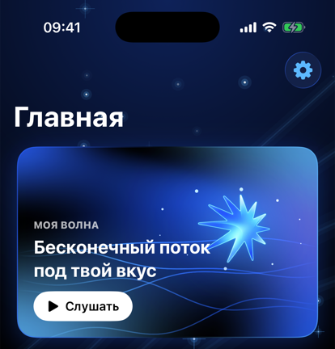
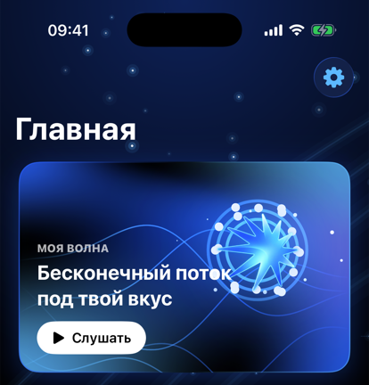
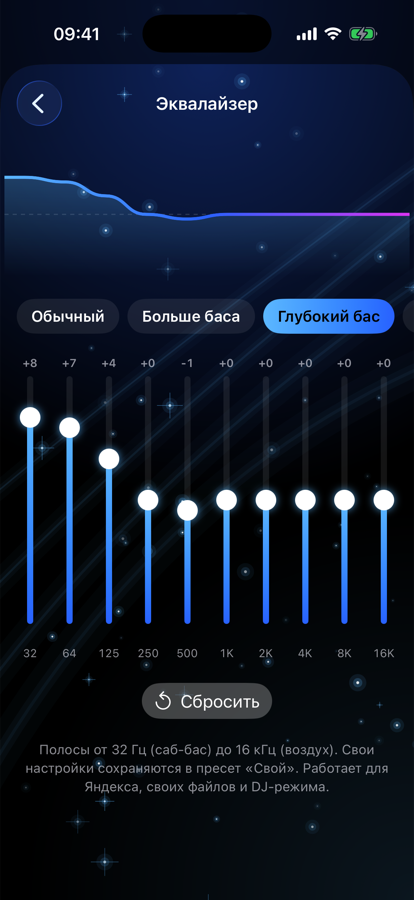
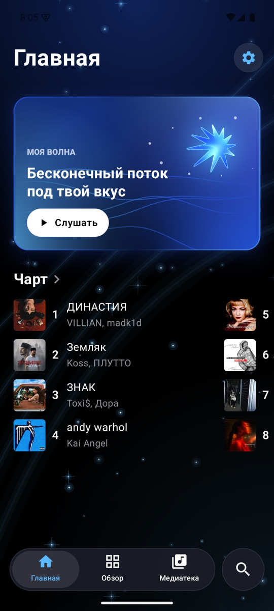
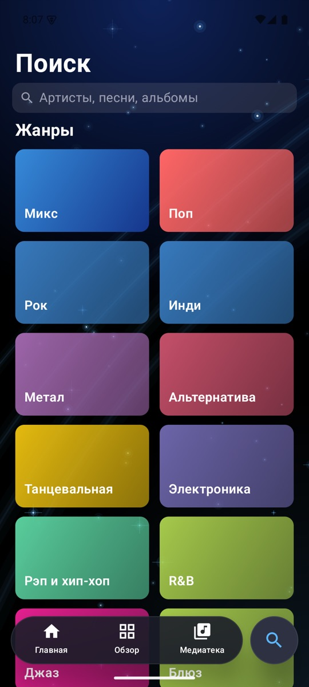
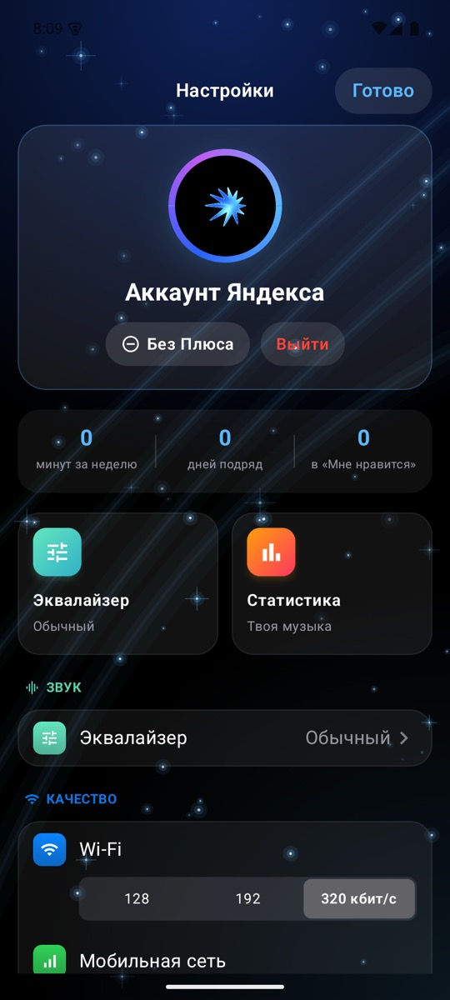
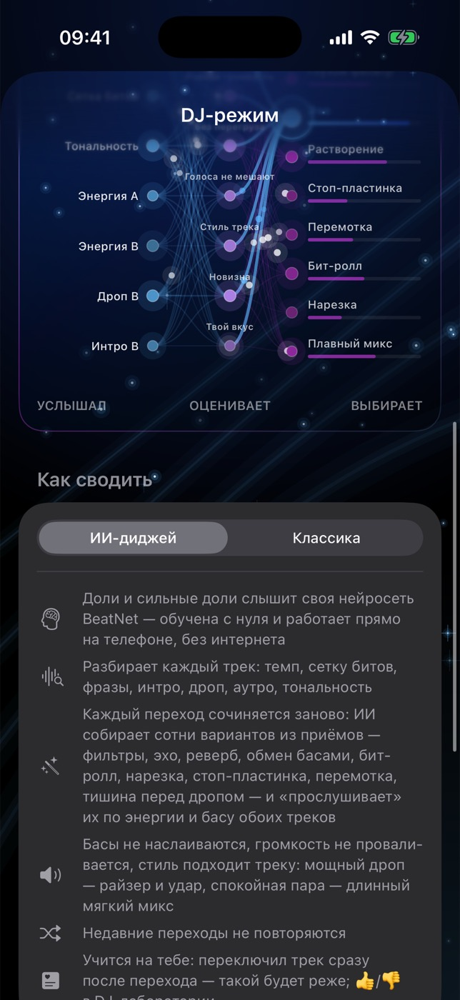

Открытый клиент Яндекс Музыки в стиле Apple Music. ИИ-диджей своей нейросетью слышит биты и сводит треки в непрерывный сет — прямо на телефоне, без серверов.
iPhone — IPA через eSign / AltStore, iOS 18+ · Android — APK, Android 8+ · нужна подписка Яндекс Плюс
Знакомый каталог, «Моя волна» и плейлисты Яндекса, но в интерфейсе, который приятно открывать.
Интро нового трека ложится на аутро старого, басы меняются на дропе. Не сводится по темпу — красиво уходит в эхо.
Карточка дышит в такт треку. Новые сессии волны — не одно и то же после каждого запуска.
Обложка на весь экран блокировки и анимированные обложки, если они есть у трека.
Синхронные тексты с заливкой слов и карточки строк для сторис.
Пресеты, свой профиль, ровная громкость между треками и кроссфейд.
MP3, FLAC, M4A из «Файлов», свои плейлисты, виджеты, Siri и Пункт управления.



Тот же неоновый дизайн, «Моя волна», чарт, поиск, тексты караоке, эквалайзер — и ИИ-диджей с той же нейросетью BeatNet: на Android она слышит биты так же, как на iPhone.



Чтобы сводить по битам, нужно точно знать, где они. Для этого в Yokayo своя маленькая нейросеть.
Вторая своя нейросеть. Она не выбирает переход из списка — она его рисует: на каждую долю решает, как двигать громкость, бас, середину, фильтры, эхо и реверб обеих дек.

Весь код приложения на GitHub под лицензией MIT. Никакой телеметрии и чужих серверов: приложение общается только с Яндекс Музыкой.
ios/ — приложение для iPhone на SwiftUIandroid/ — приложение для Android на Kotlin и Jetpack Composedocs/ — этот сайт
Yokayo Music — неофициальный клиент. Не связан с Яндексом и Apple. Музыка воспроизводится по вашей подписке.